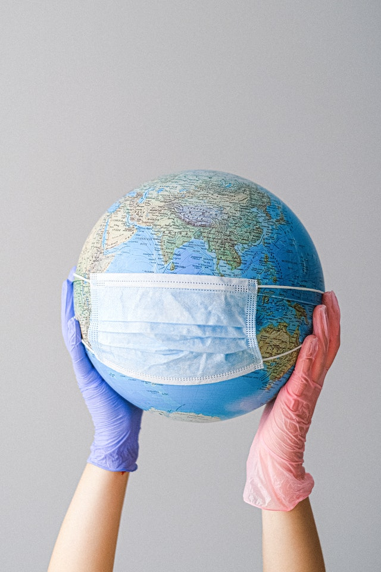
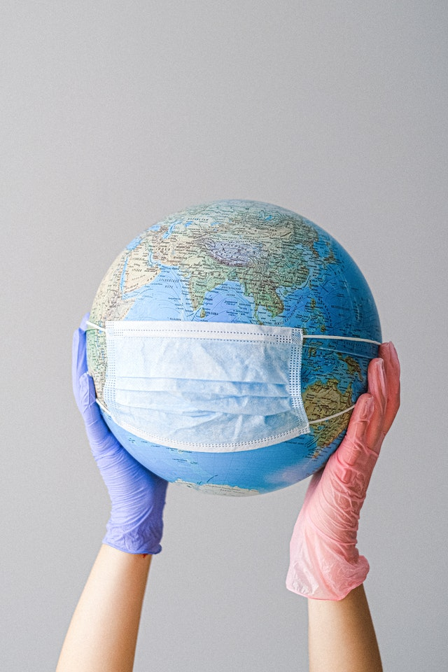

No disadvantages.
Only benefits.
Various items that can be used: Plastic bags, plastic cups, plastic packaging used for potato chips, biscuits, chocolates etc.
Various items that can be used: Plastic bags, plastic cups, plastic packaging used for potato chips, biscuits, chocolates etc.
PlastikoPatch is an elegantly thought out solution to recycle locally generated plastic waste, using it to fill the roads and not precious land.